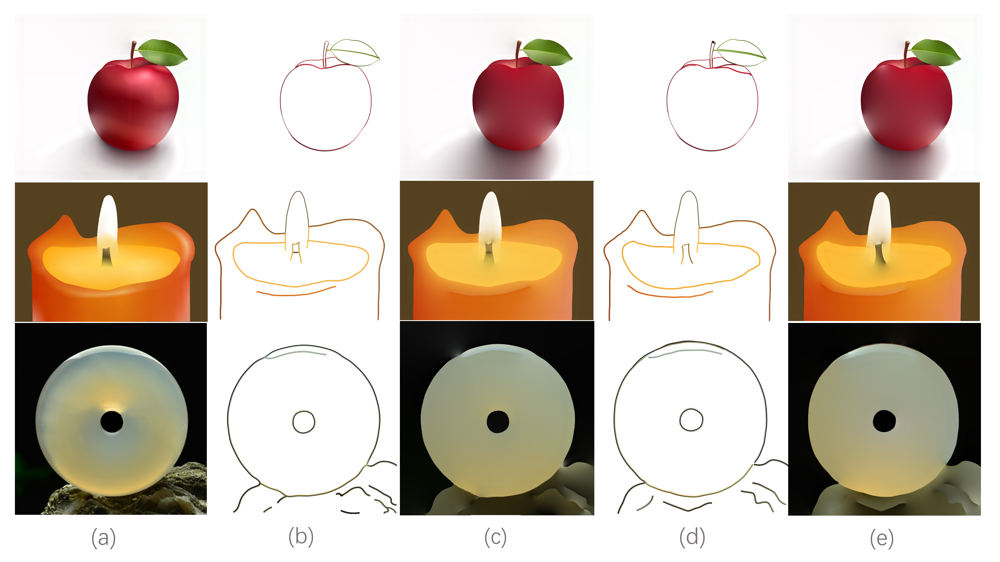

Edge Thinning 1.0
Introduction
The edge thinning software aims to obtain the binary boundary by thinning the image edge map, which uses the idea of skeletonization. If you use this software, you can download it in the left navigation bar and please quote the following paper:
@article{DBLP:journals/cvgip/WangXGZ20,
author = {Yuting Wang and Shiqing Xin and Shanshan Gao and Yuanfeng Zhou},
title = {Skeletal saliency map computation based on projection symmetry analysis},
journal = {Graph. Model.},
volume = {109},
pages = {101070},
year = {2020}
}
Example
Fig. 1. Comparisons with the non-maximum suppression (NMS) for probability edge thinning. (a) Input images, (b) Edge map generated by edge detection algorithm based on deep learning, (c) Edge thinning by non-maximum suppression, (d) Edge thinning by our method.
Recent edge detection methods based on deep learning often obtain a probability edge map and it is difficult to be used directly in image processing applications. Most methods need to get the binary boundary by the non-maximum suppression. However, this operation often leads to a low-quality boundary. In order to solve this problem, we consider to extract the binary boundary from probability edge map by the idea of skeletonization. Some examples are shown in Figure 1.
Application
Vector Graphics Generation
Fig. 2. Comparison of Poisson vector graphics (PVG) generated by our diffusion curves and the manual diffusion curves. (a) Reference, (b) Our diffusion curves, (c) The Poisson vector graphics (PVG) drawn by (b), (d) The manual diffusion curves, (e) The Poisson vector graphics (PVG) drawn by (d).
Our method can be applied to various graphics and image processing tasks because it can obtain a relatively satisfactory boundary result. Taking vector graphics generation task as an example, our method can automatically generate the diffusion curve at the boundary position, reduce the number of user interaction, and improve the automation degree of vector graphics generation. Experimental results show that vector graphics generated by our diffusion curve and manual diffusion curve all produce satisfactory results, but our method saves more time and work.